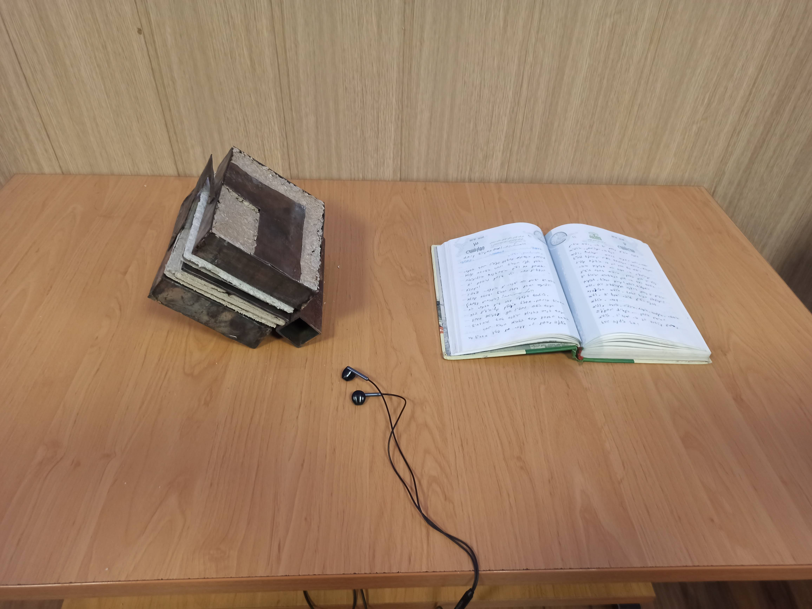
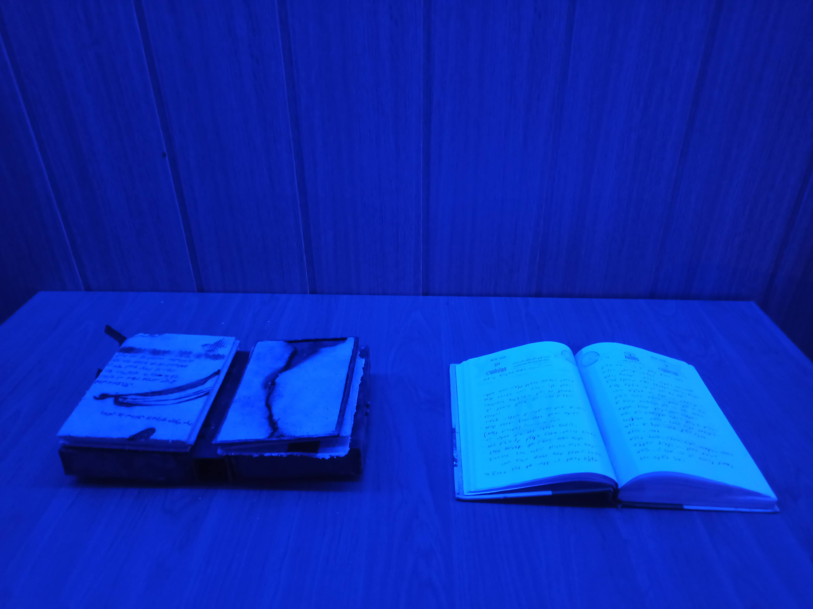
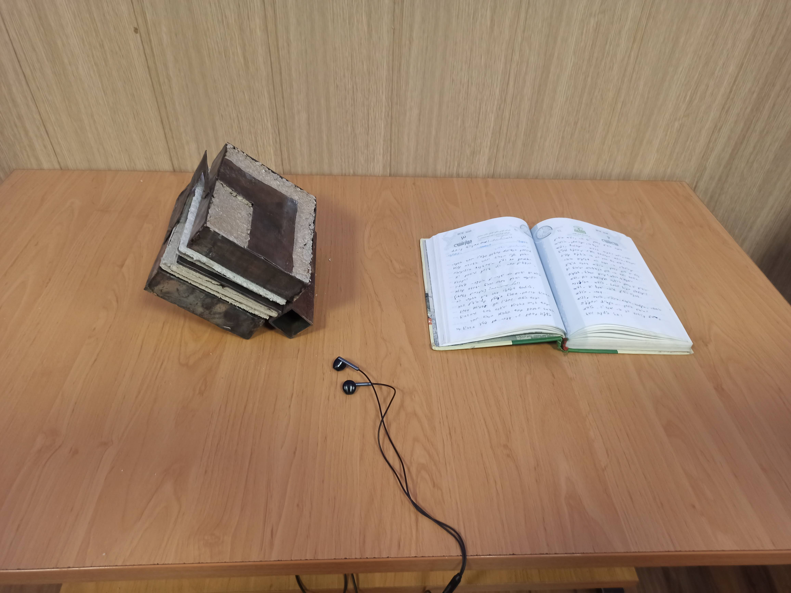
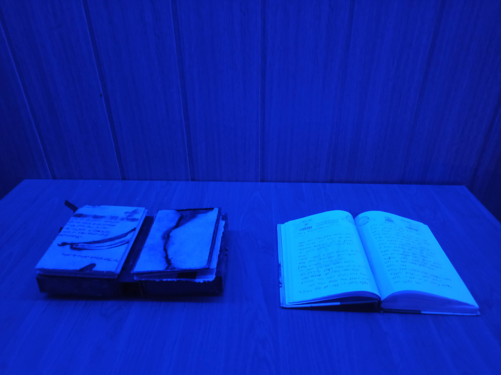

Description
The project *Chronicles of Time* is an introspective journey, an attempt to reinterpret and reimagine personal memories, taking the artist into the depths of nostalgic subconsciousness and a challenging period of life. This project encompasses an artist’s book, one of the artist’s teenage diaries, and audio files featuring the artist’s readings of the diary entries in a cryptic language invented during adolescence. These meticulously crafted ciphers invite the viewer to embark on an experience of exploration and personal decryption of the artist's past.
 



About this collection
Chronicles of Time captures a journey through moments in time, striving to preserve and hold onto fragments of life that might otherwise be lost amidst the pressures and monotony of daily existence. By employing a self-devised cryptography, the project portrays memory as something deeply personal and enigmatic, drawing the audience into a world where personal recollections transform into evocative and mysterious mental images.
The Artist’s Book and the Diary: The artist’s book serves as a visual and tangible manifestation of past memories and fragments of life, inviting the audience to dive deeper into the narrative. The teenage diary, written in an invented script and language, acts as a locked treasure chest safeguarding the secrets of that era. This symbolic script represents hidden layers of the mind, accessible only through effort and intentional decoding.
Sound and Auditory Experience: The auditory element, featuring the artist's reading of the diary entries, forms a crucial part of this project. These recordings, articulated in the cryptic language, transport the audience into the emotional and experiential depths of that tumultuous time. The use of headphones creates a close and intimate experience for the audience, where the artist’s voice calls from the past, making the memories more vivid and alive.
Research and Scholarly Article: To explore the most suitable artistic form for expressing this intense period, the artist conducted extensive research into various art forms and discovered the potential of artist’s books. These explorations culminated in a scholarly article that examines the goals, methodologies, and significance of artist’s books in contemporary art. This research ultimately guided the development of *Chronicles of Time* using the artist’s book as a key medium.
Visual Presentation and Spatial Design: The project’s display features a softly lit, enigmatic space designed to evoke a sense of calmness and mystery. The diary and artist’s book are placed on a table, accompanied by headphones playing the audio recordings, fostering a private and reflective experience for the audience. This arrangement encourages the viewer to delve into the concepts of memory, time, and personal codes.
Chronicles of Time is a multidimensional and multisensory experience that invites the audience to reconsider the concept of memory and its relationship with time and individual and collective identity. Through its scholarly research and artistic execution, the project seeks to uncover the hidden layers of the individual psyche. Every element—from the cryptic writing to the audio and spatial arrangement—acts as a bridge between past and present, subconscious and conscious. This project not only revisits past moments but also responds to the pressures and challenges of adolescence, expressing them through a deeply personal and cryptic language. It invites the artist on a new journey into their world and the audience to accompany them on this evocative exploration.